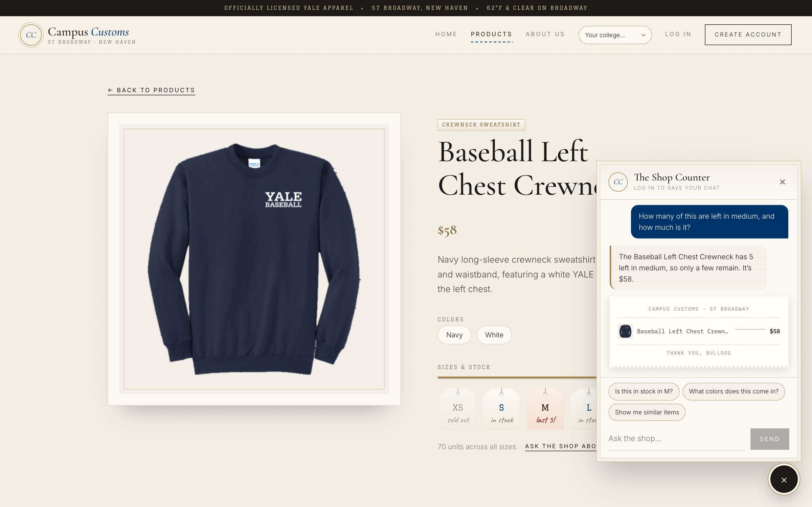
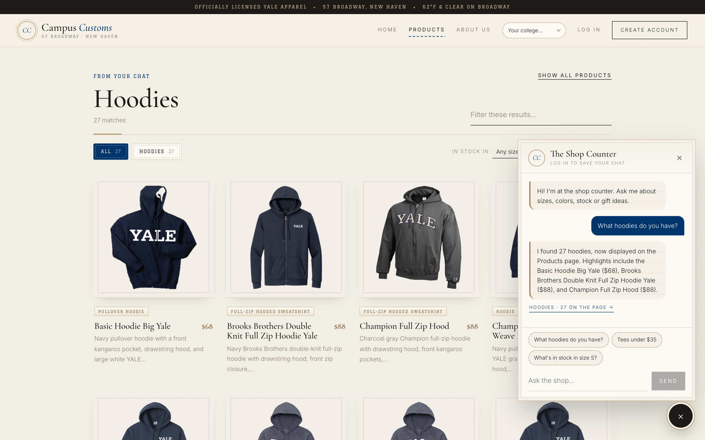
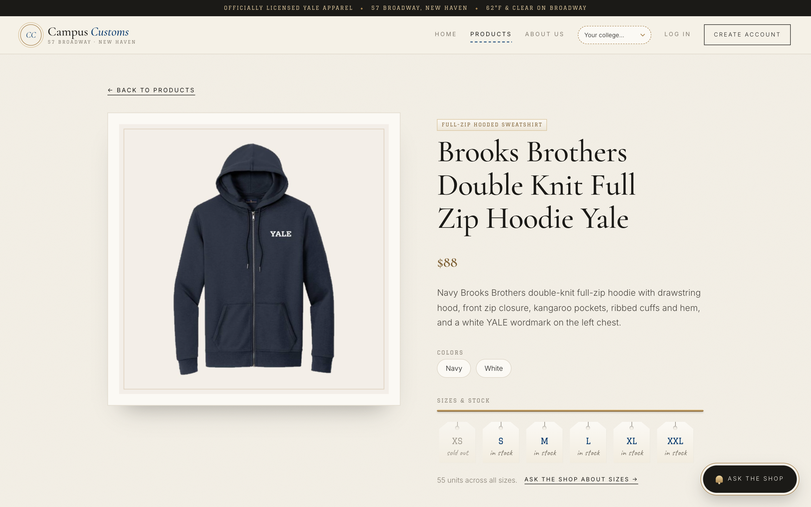
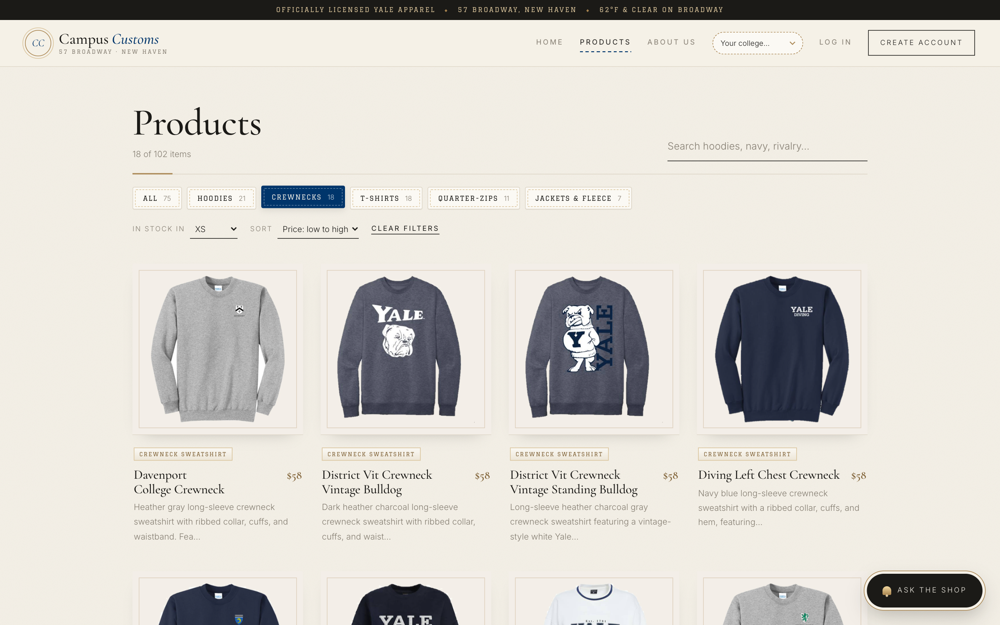
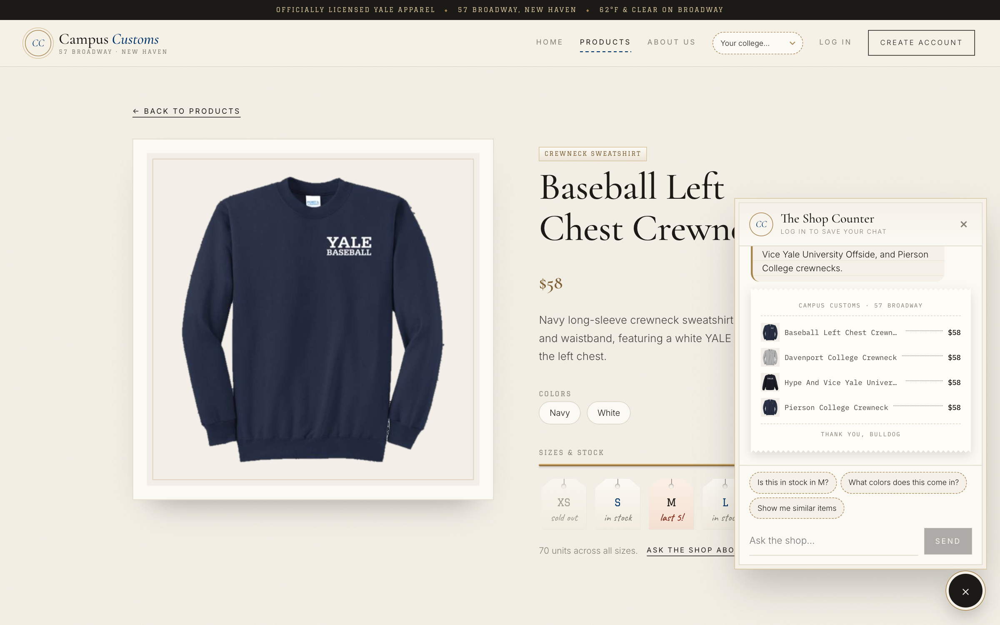

MGT 409 · Homework 4 · Problem 11
App Check: Campus Customs live site
| # | Check | What we looked for | Result |
|---|---|---|---|
| 1 | Chat checks an item's inventory | Stock and price in the chat match the database exactly | PASS |
| 2 | Category question → search-result cards | "What hoodies do you have?" fills the page with hoodie cards that still open the detail page | PASS |
| 3 | Problem 9 usability feature | Category chips, the "in stock in size" filter and sorting all work together | PASS |
| 3b | Bonus: sold-out size → in-stock alternatives | A sold-out size is stated honestly, with similar items in that size suggested | PASS |
Check 1
Chat checks the inventory level of an item
On the Baseball Left Chest Crewneck product page, the shopper asked:
How many of this are left in medium, and how much is it?

Database check (data/campus_customs.db, read-only)
| Product | Price | XS | S | M | L | XL | XXL |
|---|---|---|---|---|---|---|---|
| Baseball Left Chest Crewneck | $58.00 | 0 | 15 | 5 | 25 | 0 | 25 |
How the agent got it: it called check_stock(product_id, size="M") and get_product_info, which read inventory and catalogue. A code check also rejects any $ price that didn't come from a tool.
Check 2
Dynamic search-result cards after a category question
From the Home page, the shopper asked:
What hoodies do you have?


Check 3 · Problem 9 usability feature
Category chips, "in stock in size" filter and sorting
On the Products page (102 items), the shopper chose In stock in: XS, the Crewnecks chip, and Sort: Price, low to high.

?category=crewneck).Check 3b · Bonus Problem 9 feature
Sold-out size → in-stock alternatives
Continuing the chat on the Baseball Left Chest Crewneck page, the shopper asked:
Is it in stock in XS?

find_alternatives tool to suggest three similar $58 crewnecks that do have XS in stock, printed as a clickable receipt, so a dead end becomes a possible sale.Screenshots were captured automatically with Playwright driving Google Chrome against the live servers, with animations paused so frames are crisp. Every chat answer above came from the real agent, not a stub.